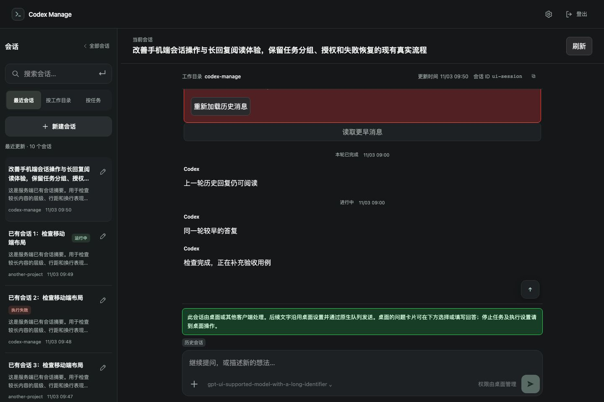
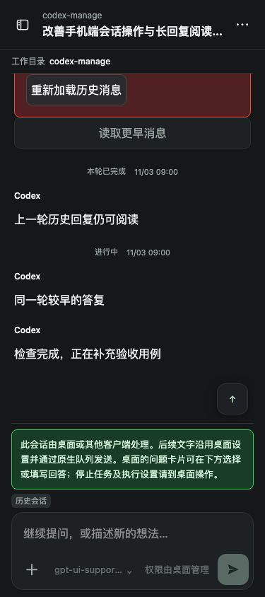
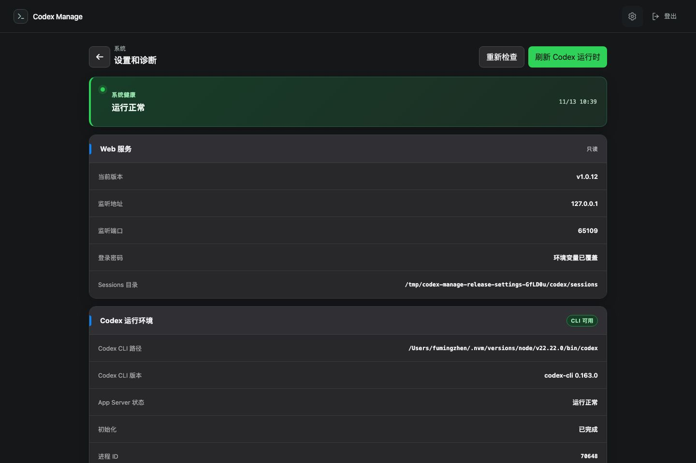
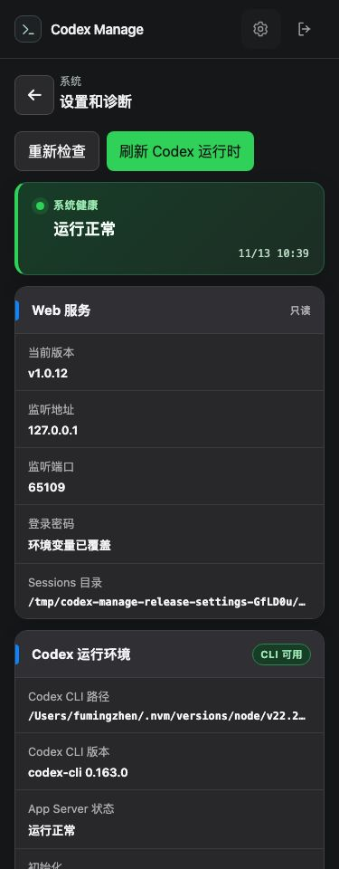

桌面会话历史、实时输出与 503 验收
2026-11-13 · 分支 codex/session-history-503 · 基线 b662b35
修复已合并 main，并正式发布 v1.0.12，三平台安装验收通过。远端 eric-codex.foxhello.com 原会话的 503 消除与远端验收没实现，需要用户升级后在原会话复测。
说明原因
本机已确认三个问题：首屏被历史读取阻塞；Web 没有把已有桌面订阅中的历史和新输出用于消息时间线；一轮只要出现过 final_answer，就把该轮全部过程消息折叠。
真实桌面样本仍处于 inProgress，较早 final_answer 之后继续产生 commentary。这些新进度已经到达 Web 接口，但被折叠隐藏。修复后，运行中的消息直接展示。
远端实际 503 原因待验证。用户截图中的 maikoo-pay 会话不在本机索引；本机旧路径请求多次成功，未复现远端故障。代码默认 RPC 超时 60 秒，异常统一转成 503，尚不能断定用户这次一定是超时。
当前代码问题点
旧路径的最近 20 轮原始 RPC 数据约 11 MB。summary 虽然更快，却会漏掉样本中的 97 条中间回复等内容，所以保留完整历史语义。桌面 follower 已有实时完整状态，此前只用于问题面板；时间线仍依赖落盘历史。
此外，自动重试一开始便清除旧错误，造成报错一闪而过；历史初次失败时，桌面游标也没有传给翻页入口。
代码错误位置
src/client/App.tsx：详情加载、历史错误、翻页和 SessionTimeline.renderTurn；DesktopQuestionsPanel.tsx：桌面状态轮询；sessionHistory.ts：历史合并。
src/server/services/DesktopQuestionService.ts：桌面历史投影；SessionService.ts：最近页与更早页；CodexAppServerClient.ts：RPC 超时；routes/sessions.ts：503 转换。
修改方案
复用原桌面的只读 follower，以连续的最近历史页及原始游标展示消息。通过已有 3 秒轮询同步新输出，按轮次和条目 ID 合并，保留已读旧页。仅折叠已结束轮次最后答复之前的过程消息。
历史读取失败时仍显示桌面内容，翻页沿用桌面原游标；未知边界、断层或无法安全截断时使用原完整历史接口。Manage 自己持有的会话不等待桌面订阅。元信息独立加载，失败提示保留到成功，刷新失败保留已有消息，并记录脱敏失败原因。
官方桌面仍照常点原图标启动。没有改启动参数、新建共享 app-server、获取 writer 或向真实会话发送验收输入。
修改的代码点与完成程度
| 项目 | 状态 | 证据 / 需要帮助 |
|---|
| 已运行桌面的最近历史展示 | 已实现 | 本机原桌面返回 7 轮，Web 直接展示 |
| 新输出自动追加、运行进度保持展开 | 已实现 | 页面打开后才产生的新消息可见，未刷新；真实截图如下 |
| 同一轮较早 final_answer 不再隐藏后续进度 | 已实现 | 真实样本及桌面 / 375px 专项通过 |
| 更早历史分页、首屏 503 时沿用桌面游标 | 已实现 | 真实游标读取 20 轮，HTTP 200；503 场景有浏览器回归 |
| 加载、持久错误、手动重试、刷新失败保留消息 | 已实现 | 桌面 / 375px 故障注入测试通过 |
| 服务端失败日志 | 已实现 | 请求 ID、会话、耗时、查询形态及脱敏原因 |
| 消除远端本次实际 503 并在原会话验收 | 没实现 | 需要完整出错会话链接及已有登录访问方式，或服务器 SSH 别名 / 失败日志；无需发送密码 |
| 修复合并 main、正式发布 v1.0.12 | 已实现 | 源码 78d21b6，规范 Runtime tag、正式包、三平台验收齐全 |
| 远端服务升级到 v1.0.12 | 没实现 | 由用户在原机器执行升级命令，在设置页核对 v1.0.12 |
真实桌面验证
使用隔离的本机 Web 进程读取当前原桌面会话，没有 API 模拟。冷订阅首条消息约 3.1～3.7 秒；已有订阅约 330ms。确认页面初次打开时没有下面的消息，助手随后发出进度后，Web 自动出现了它，且没有被弹窗遮挡。
真实本机消息截图，仅截取本次进度，未复制历史、未刷新。为查看消息关闭了待回答弹窗，没有提交答案。
随后展开已加载轮次，并通过原始桌面游标读取更早历史：HTTP 200，返回 20 轮。浏览器未发生脚本错误，没有 resume、input 或问题回答写请求。记录中的 appearedAfterReadyMs 包含助手撰写消息前的等待时间，不能作为传输延迟。
故障注入与回归
197 项单元/集成、10 项浏览器专项、10 项现有审批与历史回归全部通过。类型检查和前后端构建通过。下列截图来自隔离浏览器的模拟数据和注入 503，用于检查失败行为，不是远端原会话的截图。

1440px：历史接口注入 503，桌面历史和较早答复后的运行进度仍可见、可更新；翻页测试也通过。

375px：历史和实时进度可见。
 注入超时 503：自动重试期间保留错误和重试入口，成功后清除。
注入超时 503：自动重试期间保留错误和重试入口，成功后清除。
远端核对与后续条件
eric-codex.foxhello.com 的公开前端 index-GrHky3MS.js 与正式 v1.0.11 发布包字节一致，SHA-256：b6aebb9f698a8638323db4d37ae5ddc6c53fcedacf2c6dd7f75127e5de7e7d27。它不含本次修复；后台版本未验证。
远端业务接口要求登录。需要在原出错会话下捕获失败接口和服务端原因，才能判断 503 来自 RPC、后台还是代理，并继续修复和验收。域名已确认，无需重复提供；目前缺少完整会话链接和可用访问方式。
v1.0.12 正式发布与安装验收
2026-11-13 10:35:28（北京时间）正式发布，修复已合并 main。源码 78d21b69a557d4bbc1e9734c4b949aa543766ade；release/v1.0.12、v1.0.12、annotated runtime/v1.0.12 指向同一源码。
发布流水线和三平台复验全部通过：Linux 8 项、Intel Mac 10 项、Apple ARM Mac 10 项。本机 Intel Mac 的 10 项 launchd 检查也通过。覆盖新装、升级、回滚、启停、配置保留和实际运行版本。
正式下载包 SHA-256：2e78aa561db678dd638585f079b84698be3884b2a1bac7e56153d7cade03a3e1。下图来自正式发布包启动的隔离服务，没有自动升级用户原安装。

1440px：真实发布包的设置页显示 v1.0.12。

375px：运行正常，当前版本 v1.0.12。
macOS 升级命令（当前桌面用户执行）：
curl -fsSL https://github.com/foxhello-ai/codex-manage/releases/download/v1.0.12/install-runtime.sh \
| bash -s -- --version 1.0.12
升级后刷新 Web，在设置和诊断检查“当前版本”为 v1.0.12。Linux 升级命令见版本说明；完整安装记录与汇总 JSON已保存。
完整验证记录 · 真实桌面记录 · 专项结果 · 回归结果 · 详细记录